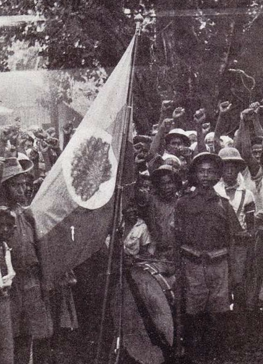
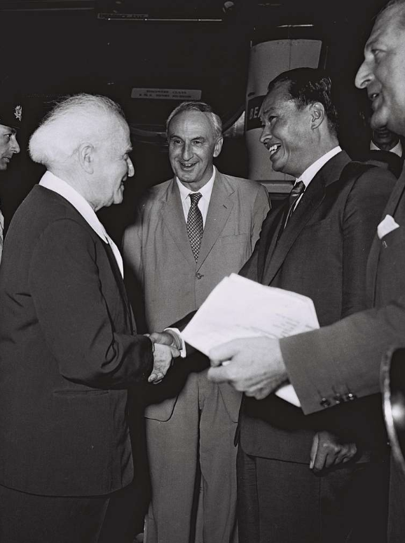
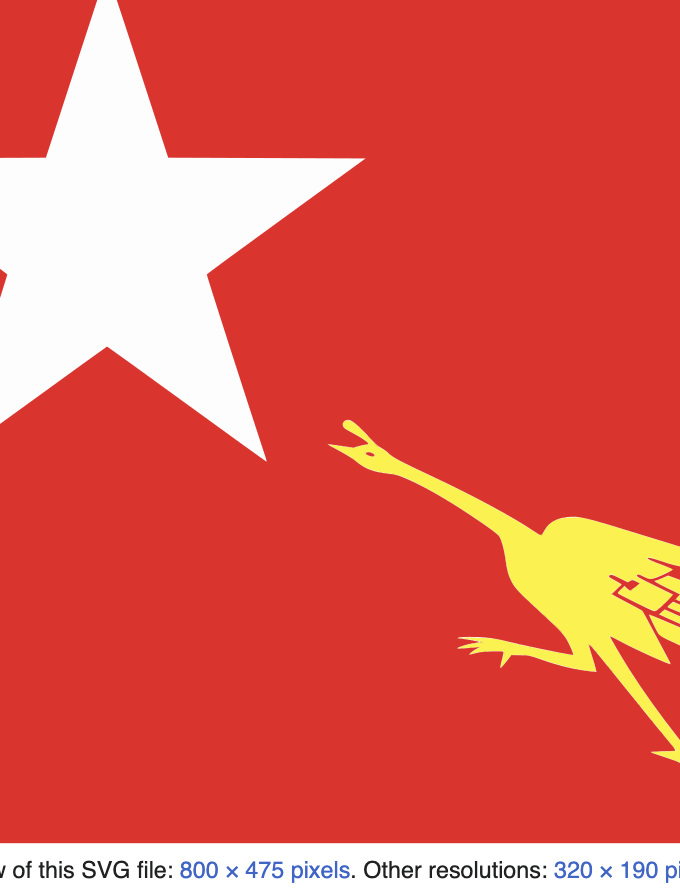
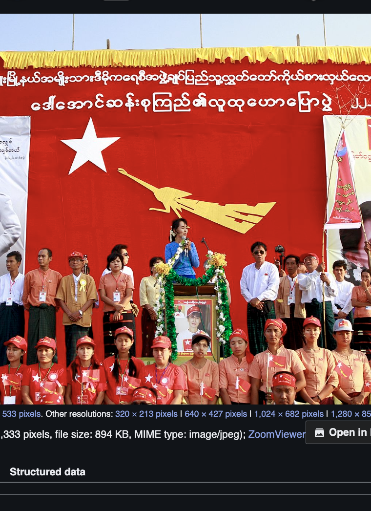
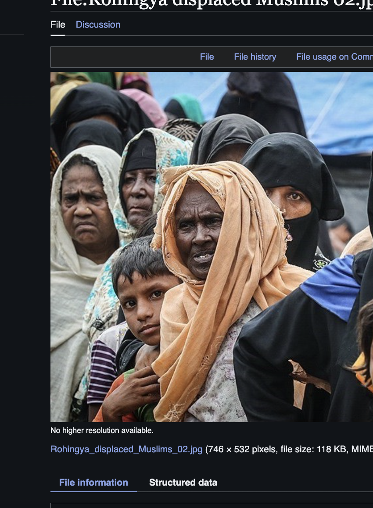
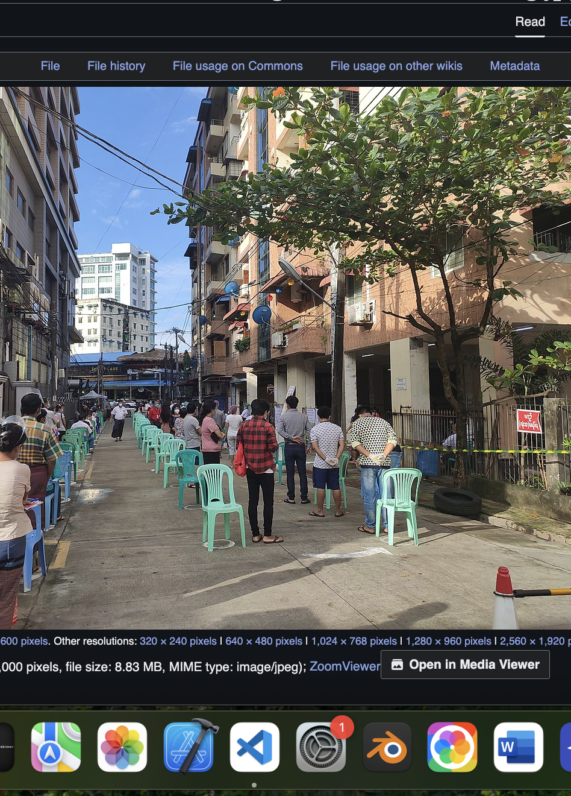
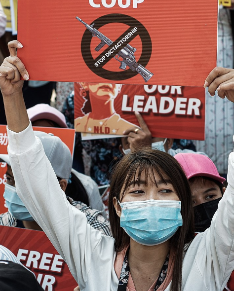
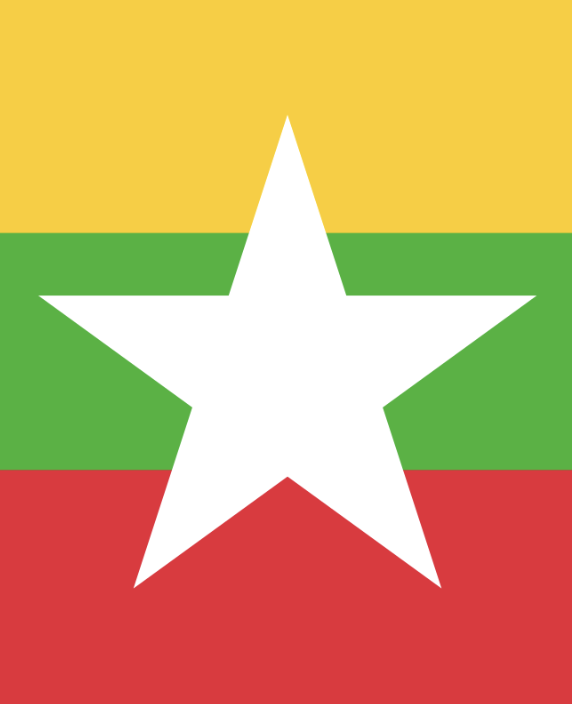

Putting Things Together
Below are several information cards, each holding descriptions of crucial events that have contributed to the divide between people and government
Jan 4, 1948
Independence from Britain
Burma, having been under British rule since 1824, joined the Japanese as the Burma Independence Army, before switching sides to the British as the Burma National Army. In gaining favor of the British, a successful negotiation resulted in a new constitution on January 4, 1948. After being under British rule for the past 124 years (1824-1948), Burma was its own independent nation.
Photograph of Burma Independence Army [Photograph]. (1942). Wikimedia Commons. https://commons.m.wikimedia.org/wiki/File:Burma_Independence_Army.jpg. Adapted from the original.
Mar 2, 1962
General Ne Win’s Coup
On March 2, 1962, General Ne Win, Chief of Staff of the Burma Defense Forces, and his military took over Rangoon, the former capital. He justified his actions by pointing out the current economic distress and lack of ethnic minority autonomy. The bloodless coup was swift, lasting only 2 hours, as Ne Win established a socialist government that suppressed any form of dissent, eliminating the previous democracy. This would remain true for the next 26 years
Pridan, M. (1959). David Ben Gurion greeting General Ne Win, PM of Burma, on his visit to Israel in 1959 [Photograph]. Wikimedia Commons. https://commons.wikimedia.org/wiki/File:David_Ben_Gurion_-_General_Ne_Win_PM_of_Burma_1959.jpg. Adapted from the original.
May 27, 1990
First General Election
Burma, now Myanmar, held its first general election since Ne Win’s Coup. The junta military would face the National League for Democracy (NLD), a party that was led by Aung San Suu Kyi and held the support of the citizens and ethnic minorities. As expected, the NLD won in a landslide, having 80% of their people filling seats in the People’s Assembly. The military refused to accept the results and continued to hold power for the next two decades, claiming that the country would be on the path to democracy in that time.
Washiucho. (2008). Flag of National League for Democracy [Photograph]. Wikimedia Commons. https://commons.wikimedia.org/wiki/File:Flag_of_National_League_for_Democracy.svg. Adapted from the original.
Nov 8, 2015
Another general election
The next general election the NLD participated in was twenty-five years after their initial win. Again, a landslide victory with NLD members filling parliament seats was enough to form a government. By the 2008 constitution, Aung San Suu Kyi was not to rule as Prime Minister, yet she assumed the new, similar position of State Counsellor. Still, the military still controlled several aspects of the governments, such as security.
Htoo Tay Zar. (2012). Suu Kyi gives speech to supporters [Photograph]. Wikimedia Commons. https://commons.wikimedia.org/wiki/File:Suu-kyi-gives-speech-to-supporters.jpg. CC BY-SA 3.0. https://creativecommons.org/licenses/by-sa/3.0/. Adapted from the original.
Sep 2018
United nations accusations
The Rohingya, a minority Muslim ethnic group primarily residing in the Rakhine State of Myanmar, are a consistently marginalized group in Myanmar, as a 1982 Citizenship Law excluded members from citizenship, and its laws still affect how individuals are treated to this day. In 2018, the United Nations accused Myanmar of ethnic genocide, after Rohingya militants attacked a guard post, resulting in government military retaliation that killed 6700 Rohingya and diplaced 700,000 more
Hosseini, S. M. (2017). Rohingya displaced Muslims [Photograph]. Wikimedia Commons. https://commons.wikimedia.org/wiki/File:Rohingya_displaced_Muslims.jpg. CC BY 4.0. https://creativecommons.org/licenses/by/4.0/. Adapted from the original.
Nov 8, 2020
NLD Wins Again
In another crucial general election, the NLD won yet again in a third landslide victory against the military’s proxy party, the Union Solidarity and Development Party (USDP). Seeing that the past three elections resulted in guaranteed NLD wins, the military saw this as a threat and would take action the following year.
Paingpeace. (2020). Myanmar Election 2020 voting with social distancing [Photograph]. Wikimedia Commons. https://commons.wikimedia.org/wiki/File:Myanmar_Election_2020_voting_with_social_distancing.jpg. https://creativecommons.org/licenses/by/4.0/. Adapted from the original.
Feb 1, 2021
Military Coup
After a failed election, the junta military, led by General Min Aung Hlaing, resorted to force. In an early morning in February, the military overthrew the government and took Aung San Suu Kyi under house arrest, while the rest of the parliament members were sent into hiding. Afterwards, a series of protests in the capital, Naypyidaw, condemning the coup were met with violence with 600 killed, many tortured, and plenty of villages burned. This would instigate a civil war between civilian armed forces and the junta
MgHla. (2021, February 14). Protest in Myanmar against military coup [Photograph]. Wikimedia Commons. https://commons.wikimedia.org/wiki/File:Protest_in_Myanmar_against_Military_Coup_14-Feb-2021.jpg. CC BY-SA 4.0. https://creativecommons.org/licenses/by-sa/4.0/. Adapted from the original.
2021-Present
Post-coup
As it stands, both sides of the conflict control several parts of Myanmar. The civilian side appears to have a slight edge over the junta as the opposing military loses soldiers by the day. However, innocent civilians, families, and the Rohingya are still are constant risk of starvation, displacement and death as the conflict rages on with next to no widespread international attention.
A recent 7.7 magnitude earthquake in March 2025 has only worsened circumstances, decimating generators and power lines that left the people in the dark. Without help or media attention, Myanmar could fall into another decades-long regime of violent and relentless oppression.
Geopolitics often make it difficult to intervene, but using our power as a society, we can bring attention to these destructive, modern-day atrocities. One day, international pressure could potentially bring about the end to the violence.